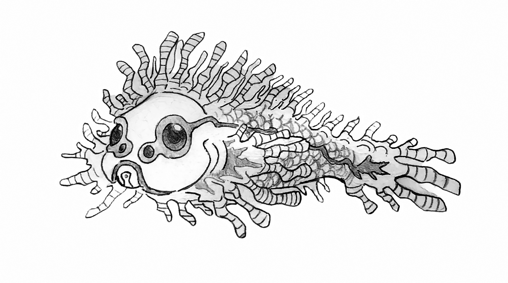

E o tão esperado recesso escolar do meio do ano finalmente havia chegado. Rita e algumas amigas tinham comprado um pacote turístico para Porto Seguro.
No primeiro dia da viagem, Rita não queria desperdiçar um só minuto. Acordou bem cedo e desceu para o refeitório, decidida a aproveitar o café da manhã.
— Mãe! Olha lá, é a professora Rita! — anunciou o adolescente, entusiasmado, apontando o dedo na direção da professora.
Inicialmente, Rita fingiu que não era com ela, mas foi em vão. Rodésio, um de seus alunos mais “custosos”, estava lá — no mesmo hotel que ela.
— Professora Rita?! Que surpresa! Bora tirar uma selfie pra eu mandar no grupo. A turma nem vai acreditar que eu tô aqui na praia com a profi! — emendou Rodésio, já se posicionando ao lado de Rita e disparando a câmera do celular.
Meio desconcertada, Rita tentou se mostrar simpática e até ensaiou um sorriso para a selfie de Rodésio.
— Que bom ver você aqui, Rodésio. Você veio com toda a sua família?
— Não, profi. Só vieram eu e minha mãe. Meu pai e meus irmãos não puderam vir. Minha mãe ganhou um prêmio no trabalho dela: uma semana em Porto Seguro, podendo levar só um acompanhante. É a primeira vez que a gente vai ver o mar.
— Muito legal! Estou muito feliz por você e pela sua mãe. Aproveitem!
A partir daquele momento, Rita sabia que teria um repórter mirim fazendo toda a cobertura de suas férias.
No dia seguinte, às oito em ponto, Rita entrou no ônibus turístico com destino à praia do Mucugê — uma das mais visitadas por turistas ligados a esportes aquáticos.
Acomodadas em suas esteiras e sob guarda-sóis, Rita e suas amigas desfrutavam da linda paisagem oceânica.
— Aí, bora dar um tibum? — chamou Rita, seguindo em direção ao mar e convocando as amigas.
— Gente, que confusão é aquela? — perguntou uma das amigas de Rita, referindo-se a um grupo de banhistas que se amontoavam à beira-mar, formando um círculo.
Curiosas, Rita e suas amigas se juntaram àquele amontoado.
— Pessoal, por favor! Mantenham distância. Vamos dar espaço para os bombeiros trabalharem — advertiu um homem de meia-idade.
— O que aconteceu?
— Parece que alguém se afogou, e os bombeiros estão prestando os primeiros socorros até a chegada do resgate — disse um banhista.
— Com mar não se brinca! — comentou outro.
— Atenção! — gritou um dos bombeiros. — Alguém aqui conhece esse rapaz ou sabe quem são seus pais ou responsáveis? Precisamos levá-lo ao hospital, e algum adulto deve acompanhá-lo.
— Puta merda! — exclamou Rita, escandalizada. — Esse rapaz é meu aluno! Ele se chama Rodésio. Onde está a mãe dele?
— Então a senhora o conhece? — perguntou o bombeiro.
— Sim. Ele é meu aluno, mas não está com a gente. Está hospedado no mesmo hotel que nós. A mãe dele deve estar em algum lugar por perto — sugeriu Rita.
— Neste caso — disse o bombeiro —, a senhora precisará nos acompanhar até o hospital. E precisamos ser rápidos, pois o caso é grave. Há risco de hipóxia cerebral.
Rita entrou na ambulância para acompanhar Rodésio, que seguia desacordado e auxiliado por uma máscara de oxigênio.
No hospital, ele foi imediatamente encaminhado para a UTI, enquanto Rita foi chamada ao balcão para preencher um formulário.
Logo, uma mulher chegou aflita.
— Moça, por favor, preciso saber sobre meu filho, o Rodésio. Ele foi trazido para este hospital. Como é que ele está? Pelo amor de Deus, alguém pode me dizer?
— Acalme-se, minha senhora, por favor. Você precisa se acalmar. Sente-se aqui enquanto vou chamar o médico plantonista — acudiu uma das atendentes.
Instantes depois, o plantonista chegou, acompanhado de Rita e do bombeiro socorrista.
— Doutor! Cadê o meu filho, o Rodésio? — perguntou a mãe, desabando em pranto.
— Tente se acalmar. O estado de saúde do seu filho é estável, e neste momento ele está sendo monitorado pela nossa equipe — disse o médico.
— Ele vai ficar bom, não é, doutor? — perguntou, aflita.
— É como eu estava tentando explicar à senhora: somente quando os resultados dos exames saírem poderemos dizer se houve algum dano, e qual a sua extensão.
— O senhor disse dano?! Que dano é esse, doutor?
— Minha senhora — interrompeu o socorrista —, seu filho sofreu um afogamento em grau elevado, com parada cardiorrespiratória. A senhora não sabia que ele estava naquela praia?
— Não. Procurei o Rodésio por todo o hotel. Só agora soube que ele entrou escondido naquele ônibus. Olhe, seu moço, o Rodésio é um menino de ouro, sabe? Só que muito levado — justificou.
Naquele momento, Rita abraçou a mãe de Rodésio e sugeriu ao plantonista que lhe administrasse um calmante.
Rodésio permaneceu desacordado por três dias, até ser transferido da UTI.
— Dona Antônia? Seu filho espera por você na enfermaria — informou a atendente.
Esbaforida, Antônia adentrou a enfermaria e se jogou sobre o filho. Ainda sonolento, Rodésio apertou a mão da mãe e soltou um berro:
— ANAGONNO!!!
— Sou eu, Rodésio! Sua mãe. Olha a mamãe aqui, diga oi pra mamãe. Enfermeira, por que meu filho está assim?
— Está tudo bem com seu filho — tranquilizou a enfermeira. — É natural esse tipo de confusão mental após um coma induzido. Leva um tempo até que ele volte completamente à realidade.
